IES Campanillas
Málaga (Spain)
Public Educational Institution: Secondary Education, High School and Vocational Training.
iescampanillas.comStudies
- SECONDARY EDUCATION (ESO)
- SPECIAL NEEDS
-
HIGH SCHOOL
- Nature Science adn Helthcare
- Humanities and Social Science
-
VOCATIONAL TRAINING
- Basic Level
- Medium Level
- Higher Level
Vocational Training at IES Campanillas
-
VOCATIONAL TRAINING - BASIC LEVEL
- Building Maintenance
- Computer Assistant
-
VOCATIONAL TRAINING - MEDIUM LEVEL (CFGM)
- Telecommunications facilities
- Microcomputer systems and networks (bilingual)
-
VOCATIONAL TRAINING - HIGHER LEVEL (CFGS)
- Web applications development (bilingual)
Higher Level Vocational Training
Web applications development
CITIC - C/ Pierre Laffitte, 6 - 8. CP 29590 Málaga - Spain
Andalusian Technological Park
Web Applications Development
- First course3 trimesters of classes
- Second course2 trimesters of classes
- Second course 1 trimester internship in a company
2000 hours including internship
Professional Modules - 1º DAW
- Programming
- Databases
- Markup Language and Information Management Systems
- Development Environments
- Computer Systems
- Professional Training and Guidance
Programming
- Variables
- Data input/output
- Conditional sentence (if and switch)
- Loops
- Random numbers
- Arrays
- Functions
- Object Oriented Programming
- Colecciones y diccionarios
- Files and arguments in console
- Java web applications (JSP)
- Access to databases with Java (JDBC)
Databases
- Relational database design
- SQL
- SqlServer, Oracle and MySQL
- Object-relational databases with Oracle
Development Environments
- Development methodologies
- Introduction to Metrica v3
- Class diagrams
- Use case diagram
- Interaction diagrams: sequence and collaboration
Markup Language and Information Management Systems
- HTML
- CSS
- XML
- XQuery
Computer Systems
- History of computing, computer system concept
- System hardware (processor, memory, motherboard, storage)
- Mounting equipment
- Windows 7 operating system (versions and installation users, groups, permissions, network, advanced management system)
- Linux operating system (Debian distributions and installation, installation packages and repositories, users, permissions, directories, usual commands, Shell scripts, cron, network configuration, NFS, SAMBA)
Professional Training and Guidance
- Prevention
- Labor law
- Orientation
Professional Modules - 2º DAW
- Web Development in Server Environment
- Web Development in Client Environment
- Web Applications Deployment
- Web Interfaces Design
- Business and Entrepreneurial Initiative
- Business English
Web Development in Server Environment
- PHP
- PHP + MySQL
- Object Oriented Programming with PHP
- Model View Controller
- Twig
- Symfony 2 / Drupal 8
Web Development in Client Environment
- HMTL DOM
- Javascript
- JQuery, JQuery Ajax, JQuery UI
- AngularJS
Web Applications Deployment
- FTP and HTTP services
- WEB server configuration (IIS y APACHE)
- Hosting
- Content Managment Systems
Web Interfaces Design
- Design basics
- HTML 5
- CSS 3
- Bootstrap
- Vectorial design applications
Business and Entrepreneurial Initiative
- Bussines idea
- The business environment
- Market research
- Finance, accounting, profitability
- Legal form
- Creation formalities
- Taxation
- Payment documents
Business English
- Business English: Cambridge English Business Preliminary Level B1 Certification
- Speaking: Communication skills. Public speaking
- Coaching: Planning objectives, time management
- Curricula and job interview
Technologies and tools
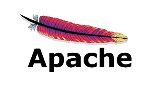
 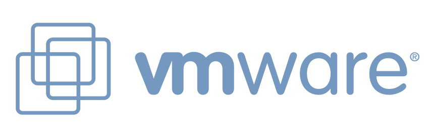
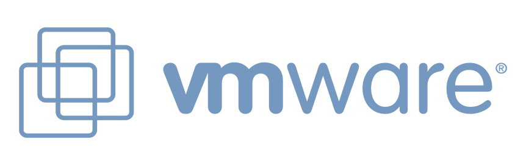
 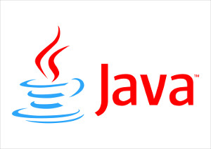
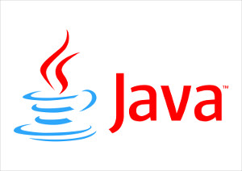

 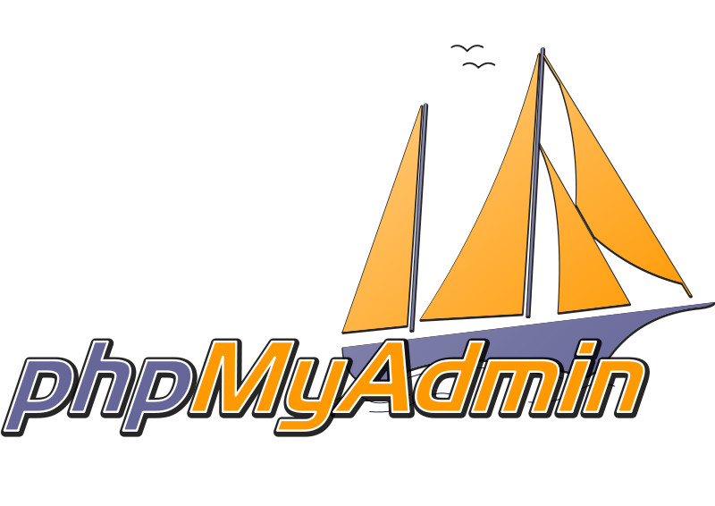
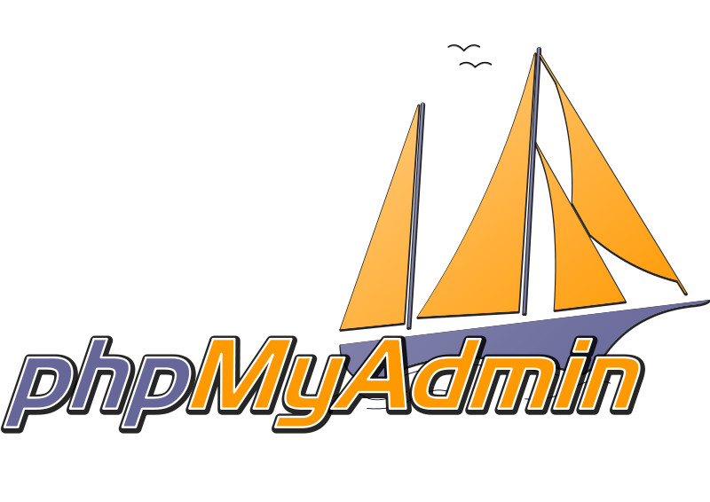

 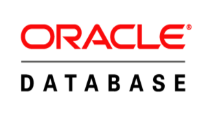
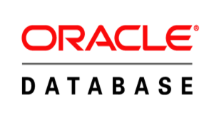
Professional certifications
 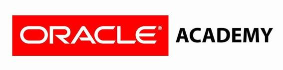
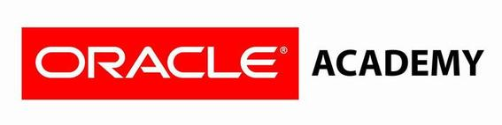
Internship in companies - PTA and Málaga
Two periods (380 hours) internship in companies
1. From March to June
2. From September to December
Internship in the European Union
- IES Campanillas Erasmus+ Center (2014-2020) for IT Higher Level Vocational Training
- 10-15 students per year
- Current destinations: Cologne, Hanover and Dusseldorf (Germany)
- Other previous destinations: Helsinki and Kouvola (Finland) and Cork (Ireland))
- Job opportunities
- Dual System (school - companies)
- German course A1/A2
- English course B1/B2
Partner companies in the European Union
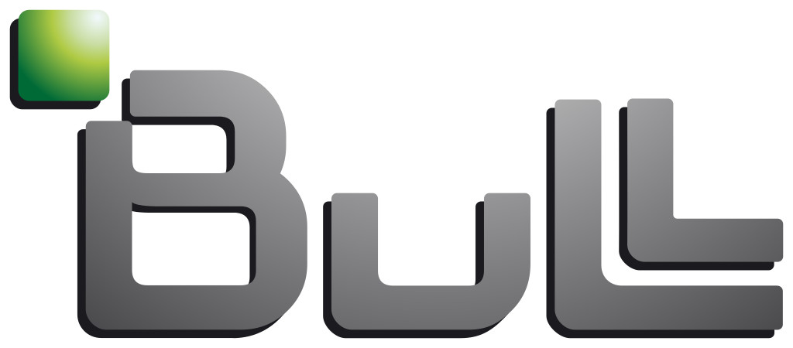 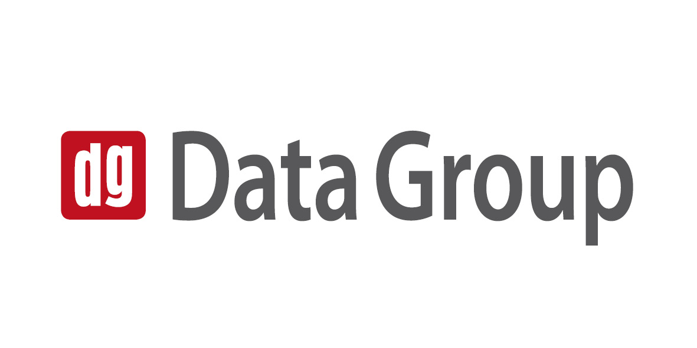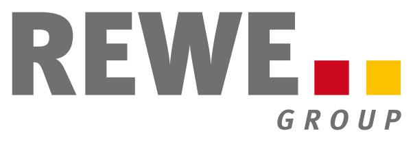